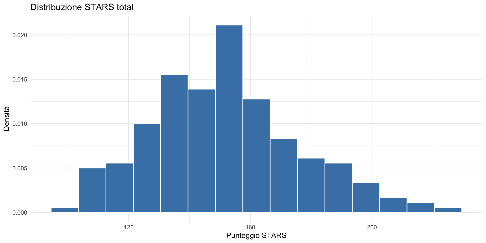
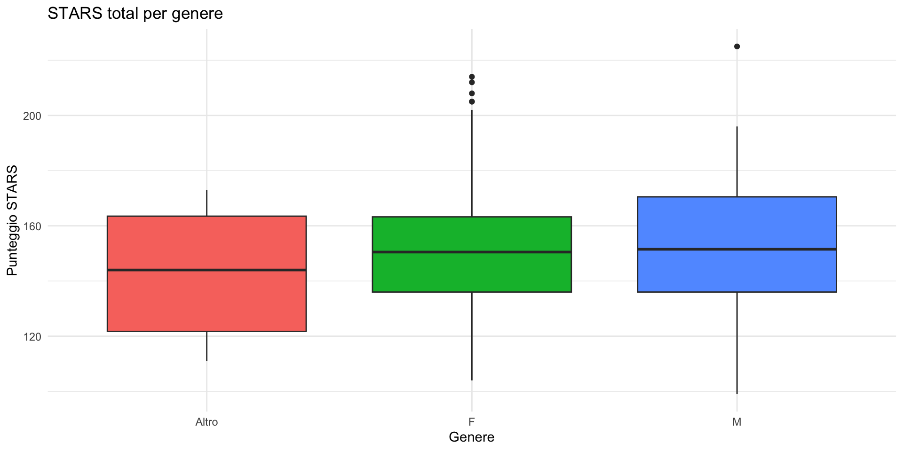
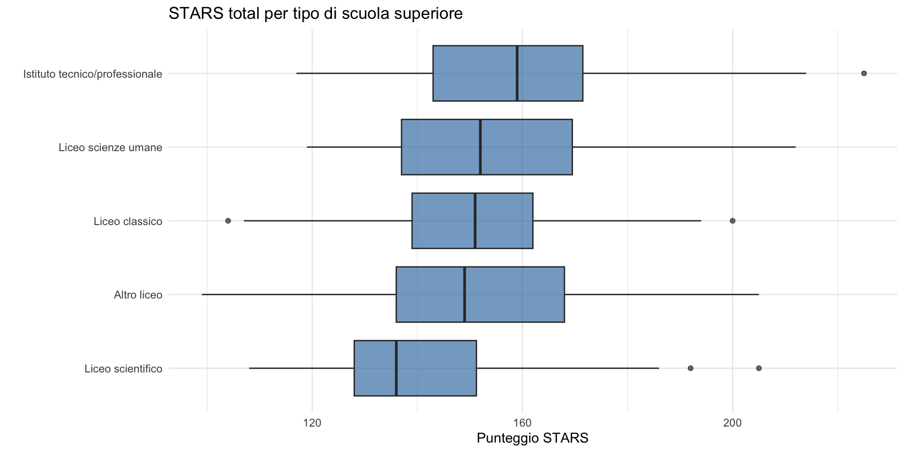
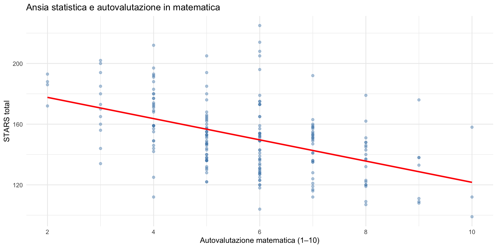
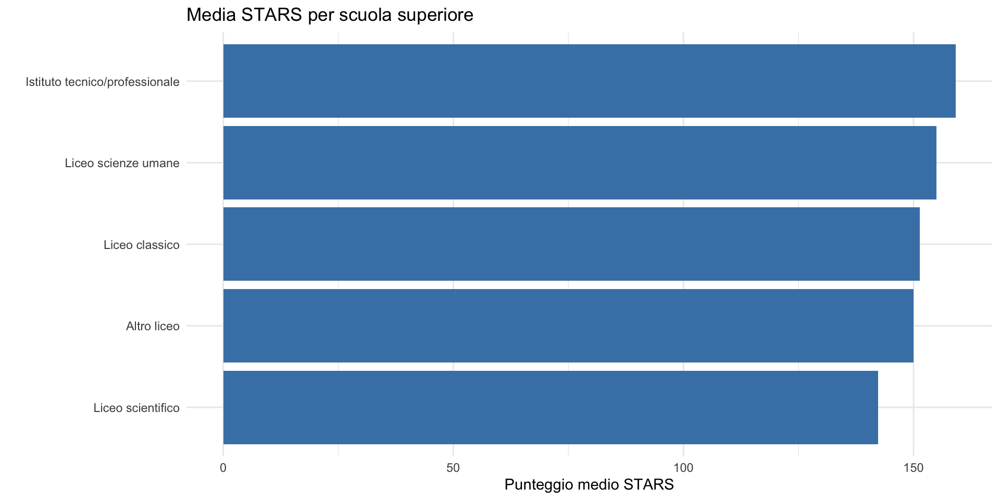
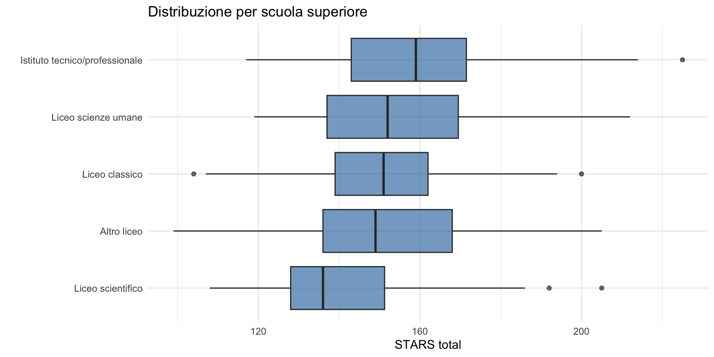

Sintassi R
Vettori, dataframe, dplyr e ggplot2
![]()
29 ottobre 2026
Una sfida professionale
Lo scenario
Immaginate di essere al primo anno di tirocinio in un servizio di salute mentale.
Il vostro supervisore vi consegna un foglio Excel con i dati di 80 pazienti che hanno completato un programma di gruppo per l’ansia sociale. Per ciascun paziente avete il punteggio a un questionario prima e dopo il trattamento, più alcune variabili demografiche.
Vi chiede: “Funziona il trattamento? E per chi funziona di più — uomini o donne?”
Come rispondereste oggi?
Aprire Excel, calcolare medie a mano colonna per colonna, creare grafici con il mouse…
Alla fine della lezione di oggi saprete fare tutto questo — e molto di più — in meno di 10 righe di codice.
Non è una questione estetica: è una questione di riproducibilità. Se il supervisore vi chiede “ma come hai calcolato questi numeri?”, il codice R è la risposta. Un foglio Excel pieno di clic non lo è.
Come usare questa lezione
Questa lezione è un repertorio di strumenti R. Non dovete memorizzare la sintassi.
All’esame potrete usare gli snippet di codice che vi sarete trascritti.
Quindi: l’obiettivo di oggi è capire la logica, non imparare a memoria. Prendete appunti e costruitevi un vostro “formulario” di codice R.
Aritmetica vettorializzata
Il concetto più importante di R
In R, le operazioni si applicano automaticamente a tutti gli elementi di un vettore.
Questo si chiama aritmetica vettorializzata ed è l’idea centrale del linguaggio.
Operazione tra due vettori
Se abbiamo due vettori della stessa lunghezza, le operazioni si fanno elemento per elemento:
Il “superpotere” rispetto al foglio di calcolo
In Excel, per calcolare le deviazioni dalla media di 10 valori dovreste:
- Calcolare la media in una cella (es.
=MEDIA(A1:A10)). - In un’altra colonna, scrivere
=A1-$B$1e poi trascinare la formula per 10 righe. - In un’altra colonna ancora, elevare al quadrato:
=C1^2, trascinare di nuovo…
Con 10 dati è fattibile. Con 800 pazienti, diventa un incubo di celle e di errori nascosti.
In R: una riga fa tutto
[1] -34.7 -18.7 -13.7 -10.7 -1.7 1.3 4.3 11.3 17.3 45.3Una sola riga di codice fa il lavoro di un intero foglio di calcolo. E se i dati cambiano, basta rieseguire il codice — nessuna cella da ritrascinare.
E per le deviazioni al quadrato?
[1] 1204.09 349.69 187.69 114.49 2.89 1.69 18.49 127.69 299.29
[10] 2052.09Il collegamento con la notazione matematica
Questo è un punto chiave: ogni formula con il simbolo di sommatoria (\(\Sigma\)) si traduce in R in modo quasi diretto.
| Formula | In R |
|---|---|
| \(\sum_{i=1}^{n} x_i\) | sum(x) |
| \(\frac{1}{n}\sum_{i=1}^{n} x_i\) | sum(x) / length(x) oppure mean(x) |
| \(\sum_{i=1}^{n} (x_i - \bar{x})^2\) | sum((x - mean(x))^2) |
| \(\frac{\sum (x_i - \bar{x})^2}{n-1}\) | sum((x - mean(x))^2) / (length(x) - 1) oppure var(x) |
Perché la traduzione funziona
Il segreto è che sotto il \(\Sigma\) c’è un’operazione che si ripete per ciascun elemento \(i\)-esimo. In R, le operazioni vettorializzate fanno esattamente questo: applicano l’operazione a ciascun elemento.
Quindi:
- la formula dice “per ciascun \(i\), calcola \(x_i - \bar{x}\)” → in R:
x - mean(x)(vettorializzato); - la formula dice “poi eleva al quadrato” → in R:
(...)^2; - la formula dice “poi somma tutto” → in R:
sum(...).
La formula matematica si legge dall’interno verso l’esterno. Il codice R si scrive allo stesso modo.
Un esercizio
La formula dello z-score (punteggio standardizzato) è:
\[z_i = \frac{x_i - \bar{x}}{s}\]
Come si scrive in R?
Una sola riga — nessun ciclo, nessun indice \(i\). R applica la formula a tutti gli elementi.
Dove si trovano i dati?
Il problema (e la soluzione pratica)
Uno degli ostacoli più frequenti per chi inizia con R è:
“Ho il file CSV, ma R non lo trova!”
La regola d’oro
Per questo corso: salvate il file CSV nella stessa cartella dello script R.
mia_cartella/
├── analisi.R ← il vostro script
└── stars_classe.csv ← i datiQuando i vostri progetti diventeranno più complessi (più cartelle, collaborazione con altri), imparerete a usare i Progetti RStudio e il pacchetto here. Per ora, la regola di “tutto nella stessa cartella” è sufficiente per gli homework e le esercitazioni.
Il dataframe e $
Ripassiamo: il dataframe
id genere scuola_superiore autovalutazione_math STARS_total WS IA TCA
1 P001 F Liceo scienze umane 5 164 50 31 24
2 P002 F Liceo scientifico 4 192 67 43 27
3 P003 F Altro liceo 10 112 51 15 10
4 P004 M Altro liceo 10 99 33 19 17
CSC FAH FST
1 30 13 16
2 25 13 17
3 18 4 14
4 17 6 7Un dataframe è una tabella in cui ciascuna colonna è un vettore. Ogni colonna ha un nome.
Estrarre una colonna con $
Accedere a righe e colonne: [riga, colonna]
[1] 112 id genere scuola_superiore autovalutazione_math STARS_total WS IA TCA
1 P001 F Liceo scienze umane 5 164 50 31 24
2 P002 F Liceo scientifico 4 192 67 43 27
3 P003 F Altro liceo 10 112 51 15 10
CSC FAH FST
1 30 13 16
2 25 13 17
3 18 4 14 [1] "F" "F" "F" "M" "F" "F" "F" "F" "M"
[10] "F" "M" "M" "M" "F" "F" "F" "F" "M"
[19] "F" "M" "F" "F" "F" "F" "Altro" "M" "M"
[28] "Altro" "F" "F" "F" "F" "F" "F" "M" "M"
[37] "F" "F" "M" "F" "F" "F" "F" "F" "F"
[46] "F" "M" "F" "F" "M" "F" "F" "M" "F"
[55] "F" "F" "F" "F" "F" "M" "M" "F" "F"
[64] "F" "F" "F" "M" "F" "F" "F" "M" "Altro"
[73] "F" "F" "F" "F" "M" "F" "F" "M" "F"
[82] "F" "F" "F" "F" "F" "F" "F" "F" "M"
[91] "F" "F" "F" "M" "M" "F" "M" "M" "F"
[100] "M" "F" "F" "M" "F" "F" "Altro" "Altro" "M"
[109] "F" "F" "F" "F" "F" "M" "F" "F" "F"
[118] "F" "F" "M" "F" "M" "F" "F" "M" "Altro"
[127] "F" "F" "F" "F" "F" "M" "M" "F" "M"
[136] "F" "F" "F" "Altro" "M" "F" "F" "F" "M"
[145] "M" "M" "F" "F" "M" "F" "F" "F" "F"
[154] "M" "F" "F" "F" "M" "F" "F" "F" "F"
[163] "F" "F" "M" "F" "M" "F" "F" "F" "F"
[172] "F" "F" "F" "F" "F" "M" "F" "F" "M"
[181] "F" "M" "F" "M" "M" "F" "F" "M" "F"
[190] "Altro" "F" "M" "F" "F" "F" "F" "F" "F"
[199] "F" "F" La virgola separa righe (prima) da colonne (dopo). Lasciare vuoto uno dei due significa “tutte”.
La pipe e dplyr
Il pacchetto tidyverse
tidyverse è una collezione di pacchetti che semplificano il lavoro con i dati. I due che usiamo oggi sono:
- dplyr: per trasformare e riassumere i dati
- ggplot2: per i grafici
La pipe: |>
La pipe è un modo di scrivere una sequenza di operazioni in modo leggibile.
Invece di annidare le funzioni:
La pipe |> si legge “e poi”: prendi il vettore, e poi calcola la media, e poi arrotonda.
Perché la pipe è utile
Con operazioni semplici la differenza è minima. Ma quando le operazioni sono tante, la pipe rende il codice leggibile come una frase:
I verbi principali di dplyr
| Verbo | Cosa fa |
|---|---|
filter() |
Seleziona righe che soddisfano una condizione |
select() |
Seleziona colonne |
mutate() |
Crea nuove colonne |
summarise() |
Riassume i dati (media, sd, conteggio, …) |
group_by() |
Raggruppa i dati prima di un riassunto |
Vediamoli in azione.
summarise(): riassumere i dati
media mediana dev_std n
1 151.665 151 24.19587 200summarise() prende un intero dataframe e lo riduce a una sola riga con le statistiche richieste.
group_by() + summarise(): il duo fondamentale
Cosa succede se vogliamo la media per ciascun genere?
group_by() dice a R: “prima di riassumere, dividi i dati in gruppi”. Tutto ciò che segue viene applicato separatamente a ciascun gruppo.
Pensare da psicologi, non da programmatori
Guardate la tabella che abbiamo appena ottenuto.
Le medie dei due gruppi sono diverse — ma basta questo per concludere che c’è una differenza reale? Cosa ci dice la deviazione standard? E la dimensione dei gruppi?
Per ora, ci limitiamo a descrivere. Ma imparate fin d’ora a non saltare alle conclusioni: nella seconda parte del corso vedremo come l’inferenza bayesiana permette di quantificare quanto siamo incerti su queste differenze.
Raggruppare per scuola superiore
# A tibble: 5 × 4
scuola_superiore media dev_std n
<chr> <dbl> <dbl> <int>
1 Liceo scientifico 142. 22.0 36
2 Altro liceo 150. 25.9 41
3 Liceo classico 151. 23.0 41
4 Liceo scienze umane 155. 24.5 47
5 Istituto tecnico/professionale 159. 23.0 35filter(): selezionare righe
media n
1 142.3056 36Nota: si usa == (doppio uguale) per il confronto, non = (che è per l’assegnazione).
Combinare più condizioni
media n
1 146.35 20Più condizioni separate da virgola significano “e” (AND): devono essere vere entrambe.
mutate(): creare nuove variabili
mutate() aggiunge una nuova colonna calcolata dalle colonne esistenti.
Esempio: nella lezione sulla statistica descrittiva abbiamo calcolato gli z-score. Con mutate():
Esempio pratico: calcolare un punteggio di sottoscala
Nella ricerca psicometrica, spesso si hanno le risposte ai singoli item e bisogna calcolare il punteggio di una sottoscala.
La sottoscala FAH (Fear of Asking for Help) della STARS è composta da 4 item. Carichiamo i dati a livello di item:
id genere scuola_superiore item_15 item_20 item_22 item_23
1 P001 F Liceo scienze umane 4 4 2 3
2 P002 F Liceo scientifico 3 4 3 3
3 P003 F Altro liceo 1 1 1 1
4 P004 M Altro liceo 1 1 1 3
5 P005 F Liceo scienze umane 3 2 3 2
6 P006 F Altro liceo 4 4 4 2Creare il punteggio con mutate()
id item_15 item_20 item_22 item_23 FAH_totale FAH_media
1 P001 4 4 2 3 13 3.25
2 P002 3 4 3 3 13 3.25
3 P003 1 1 1 1 4 1.00
4 P004 1 1 1 3 6 1.50
5 P005 3 2 3 2 10 2.50
6 P006 4 4 4 2 14 3.50In una riga abbiamo sommato 4 colonne e calcolato la media — per tutti i 200 studenti contemporaneamente. Questo è l’aritmetica vettorializzata all’opera dentro un dataframe.
Dalla formula alla pratica
La formula per il punteggio medio di una sottoscala con \(k\) item è:
\[\bar{x}_{\text{sub}} = \frac{1}{k}\sum_{j=1}^{k} x_j\]
Il \(\Sigma\) diventa una somma di colonne; la divisione per \(k\) è una normale divisione. L’aritmetica vettorializzata fa il resto: il calcolo viene applicato a ciascuna riga automaticamente.
Perché questo è rilevante per la professione
Calcolare punteggi di sottoscala è un’operazione che farete costantemente: lo scoring di questionari come il BDI-II, l’SCL-90, o il Big Five richiede esattamente questo tipo di operazioni.
Con mutate() potete creare punteggi per centinaia di pazienti in un istante — e soprattutto, il codice è documentato e ripetibile. Se un collega vi chiede “come hai calcolato il punteggio?”, gli mostrate il codice. Non “ho sommato queste colonne in Excel e poi ho trascinato la formula”.
Visualizzazione con ggplot2
La logica di ggplot2
ggplot2 costruisce i grafici per strati (layer):
- I dati: quale dataframe usare?
- L’estetica (aesthetics): quali variabili vanno sugli assi?
- La geometria (geom): che tipo di grafico? (punti, barre, linee, …)
Questi tre ingredienti si combinano con il segno +.
Primo grafico: istogramma

Anatomia del codice
ggplot(d, aes(x = STARS_total)) + # dati + estetica: x = STARS_total
geom_histogram( # geometria: istogramma
aes(y = after_stat(density)), # asse y = densità (non conteggi)
bins = 15, # numero di classi
fill = "steelblue", # colore riempimento
color = "white" # colore bordo
) +
labs(title = "...", x = "...", y = "...") + # etichette
theme_minimal() # stile grafico pulitoIl + aggiunge un layer alla volta. Ogni layer è indipendente e modificabile.
Boxplot per gruppo
fill = genere colora ciascun boxplot in base al gruppo.

Boxplot per scuola superiore

Scatterplot
ggplot(d, aes(x = autovalutazione_math, y = STARS_total)) +
geom_point(alpha = 0.4, color = "steelblue") +
geom_smooth(method = "lm", se = FALSE, color = "red") +
labs(
title = "Ansia statistica e autovalutazione in matematica",
x = "Autovalutazione matematica (1–10)",
y = "STARS total"
) +
theme_minimal()geom_point() disegna i punti, geom_smooth(method = "lm") aggiunge la retta di tendenza.

Leggere un grafico come psicologi
Fermiamoci un momento su questo scatterplot. Cosa osservate?
La relazione è negativa: chi si valuta meglio in matematica tende ad avere meno ansia statistica. Ma guardate la dispersione dei punti intorno alla retta.
Domande da porsi sempre davanti a un grafico:
- La relazione è forte o debole? (Quanta dispersione c’è intorno alla retta?)
- Ci sono outlier che “trascinano” la retta?
- La retta cattura bene il pattern, o la relazione è curvilinea?
Un grafico racconta molto di più di una correlazione \(r\) = … — e può rivelare problemi che un singolo numero nasconde.
Combinare dplyr e ggplot
Possiamo usare la pipe per preparare i dati e poi passarli direttamente a ggplot:

Il “vocabolario” minimo di ggplot2
| Geometria | Uso tipico |
|---|---|
geom_histogram() |
Distribuzione di una variabile continua |
geom_boxplot() |
Distribuzione per gruppi |
geom_point() |
Relazione tra due variabili continue |
geom_smooth() |
Linea di tendenza |
geom_col() / geom_bar() |
Grafici a barre |
Non serve impararne altri per ora. Con queste cinque geometrie si copre la maggior parte dei grafici della statistica descrittiva.
Mettere tutto insieme
Un’analisi completa in poche righe
Supponiamo di voler rispondere a: “Chi proviene dal liceo scientifico ha meno ansia statistica?”
# A tibble: 5 × 4
scuola_superiore n media sd
<chr> <int> <dbl> <dbl>
1 Liceo scientifico 36 142. 22
2 Altro liceo 41 150 25.9
3 Liceo classico 41 151. 23
4 Liceo scienze umane 47 155 24.5
5 Istituto tecnico/professionale 35 159. 23 
Torniamo allo scenario iniziale
Ricordate la domanda del supervisore? “Funziona il trattamento? Per chi funziona di più?”
Se aveste un dataframe pazienti con le colonne pre, post e genere, ora sapete già come rispondere:
Cinque righe di codice — leggibili, riproducibili, documentate. È esattamente questo il tipo di competenza che vi servirà nella professione.
Ricapitolando: il flusso di lavoro
Importare →
read.csv()(+ progetto RStudio ohere()).Esplorare →
head(),summary(),dim(),names().Trasformare →
mutate()per creare nuove variabili.Riassumere →
group_by()+summarise().Visualizzare →
ggplot()+geom_*().
Questo flusso di lavoro è sufficiente per la grande maggioranza delle analisi descrittive.
Riepilogo: le idee da portare a casa
Aritmetica vettorializzata: le operazioni si applicano a tutti gli elementi. Le formule con \(\Sigma\) si traducono quasi letteralmente in R.
La pipe (|>): collega le operazioni in sequenza leggibile.
group_by() + summarise(): il duo che permette di calcolare statistiche per gruppo.
mutate(): crea nuove variabili (es. punteggi di sottoscale).
ggplot2: grafici costruiti a strati (data + aes + geom).
Per approfondire
- Cap. 6 — Sintassi R: oggetti, vettori, funzioni
- Cap. 10 — Usare dplyr: trasformare i dati
- Cap. 11 — Visualizzazione con ggplot2: grafici
Nella prossima lezione: fondamenti della probabilità — eventi, spazi campionari e assiomi.